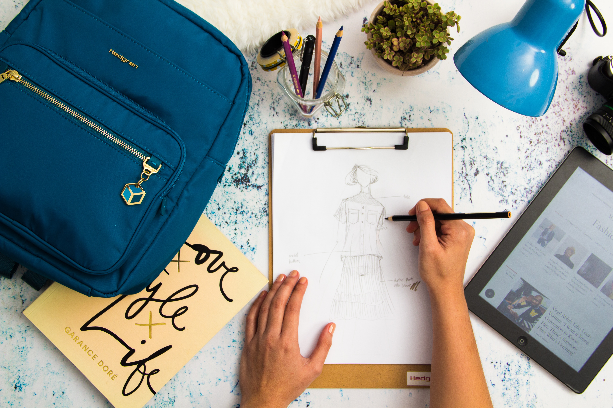

Diccionario
Amazona

Definición
Mujer que monta a caballo.
Ejemplo:
Quiero ser una Amazona como Superkardia y montar a caballo.
Avatar
Definición
Representación gráfica de la identidad virtual de un usuario en entornos digitales.
Ejemplo:
Para jugar en la videoconsola tuvo que hacerse su propio avatar.
Diseñar

Definición
Proyecto, plan que configura algo.
Ejemplo:
Voy a diseñar un disfraz para la fiesta de Halloween.
Hobby

Definición
Actividad que, como afición o pasatiempo favorito, se practica habitualmente en los ratos de ocio.
Ejemplo:
Mi hobby es montar en bicicleta. Salimos siempre que podemos mis amigos y yo.
Mascota

Definición
Animal de compañía.
Ejemplo:
Mi mascota es un perrito y pasea siempre conmigo.